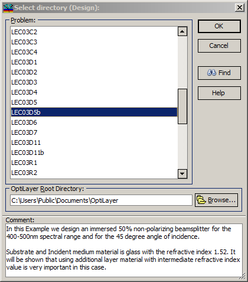

Select Directory or Project
Select Directory (DS Mode) or Project (SF Mode)
In OptiLayer, data exchange between different problem directories is facilitated by the File Transfer feature. To use this feature, start the File Transfer and specify a source directory.

The list box in this window displays the existing problem directories. The Find button activates the Find feature, which simplifies the search using a specific pattern. To select another directory, choose it from the list and press the OK button. You can select a different OptiLayer Root Directory by making a selection in the corresponding combo box or by starting a Browse dialog with the Browse… button. The comment displayed below assists in locating the correct directory for File Transfer.